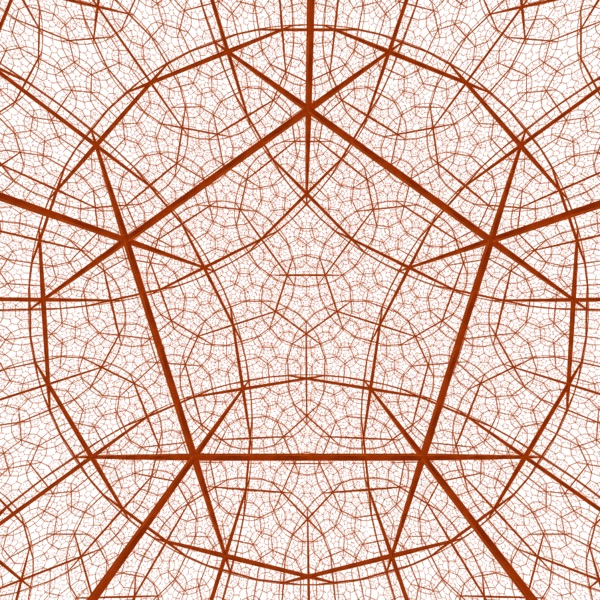
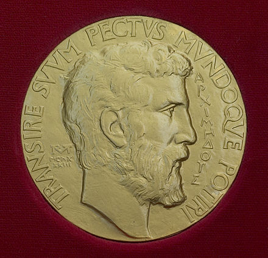
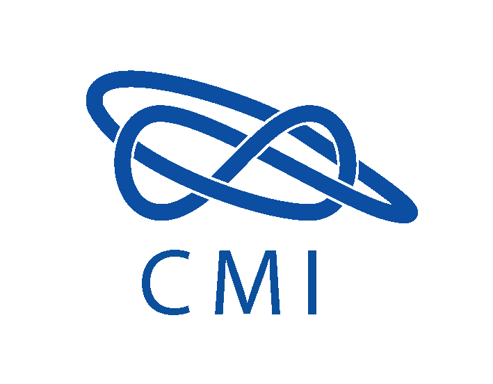
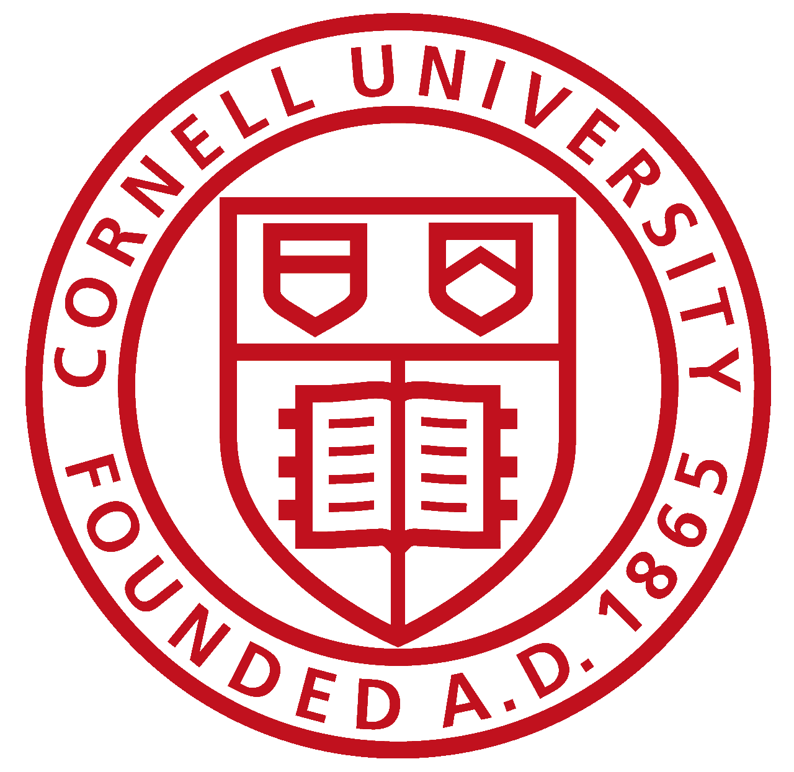

Introduktion

Öppen tillkomst sida som jag har skapat för att dela de matematiska Millenieproblemen av Clay Mathematics Intitute.
Sidan är just nu endast under alpha version och kommer i framtiden innehålla fler funktioner. Se Om för mer information. Men än så länge så har du åtkomst att besöka alla sju problem och läsa lite om vad dem handlar om med matematiskt språk.
Problemen
Millennieproblemen är sju berömda problem inom matematiken, varav sex fortfarande är olösta. Flera av dessa problem är över hundra år gamla och även om flera av dem har allmänt erkända lösningar och användningsområden saknar de matematiska bevis. Den 24 maj 2000 instiftade CMI, Clay Mathematical Institute i Cambridge, Massachusetts, Millenniepriset. Man listade dessa sju av världens stora olösta matematiska problem och utlovade en prissumma på en miljon amerikanska dollar för lösningen till vart och ett av dem. Hittills har endast ett av problemen lösts. Den 18 mars 2010 blev ryske Grigorij Perelman den förste pristagaren för sitt bevis av Poincarés förmodan.
Foto: http://www.geom.uiuc.edu/graphics/pix/Special_Topics/Hyperbolic_Geometry/ https://commons.wikimedia.org/wiki/File:FieldsMedalFront.jpg http://www.claymath.org/ https://brand.cornell.edu/merchandise.php
{kind=link}